Controle de Versão com Git - Programação Orientada a Objetos
Passo a passo no VSCode
Prof. Alexandre Agustini
(adaptado do material desenvolvido pelo Prof. Marcelo Cohen)
09/2021
Sumário
1Abrindo o projeto
-
O primeiro passo é abrir o código fonte do seu projeto no VSCode. Se estiveres no "shell" podes entrar na pasta do projeto e digitar: "code .", caso contrário apenas abra o VSCode e a seguir a pasta do seu projeto:
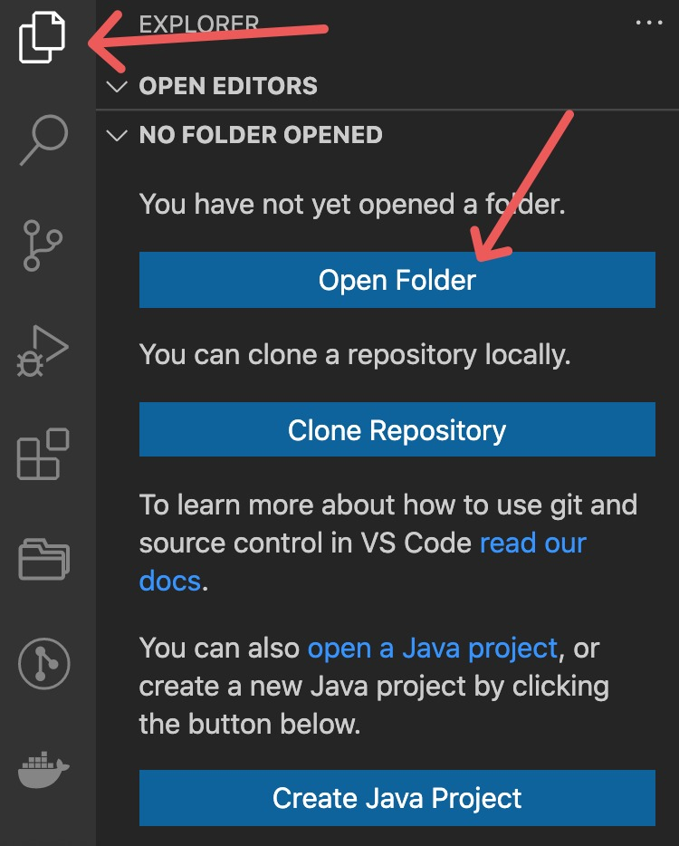
2 Vinculando o projeto ao controle de versão
- O próximo passo é associar o projeto a um sistema para controle de versão - no caso, usaremos o Git.
-
Baixe, caso ainda não esteja instalado, o pacote ⇒ Git Extension Pack (opcionalmente instale também o Git Graph):

-
No Activity Bar selecione ⇒ Source Control e a segir Initialize Repository:
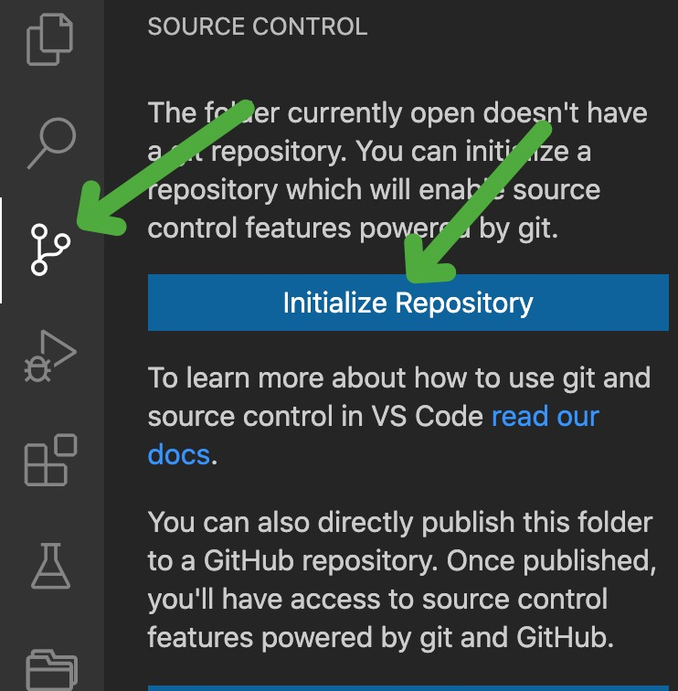
-
Observe que todos os arquivos do projeto ficarão na aba Changes e U (Untracked), indicando que ainda não foram adicionados ao controle de versão: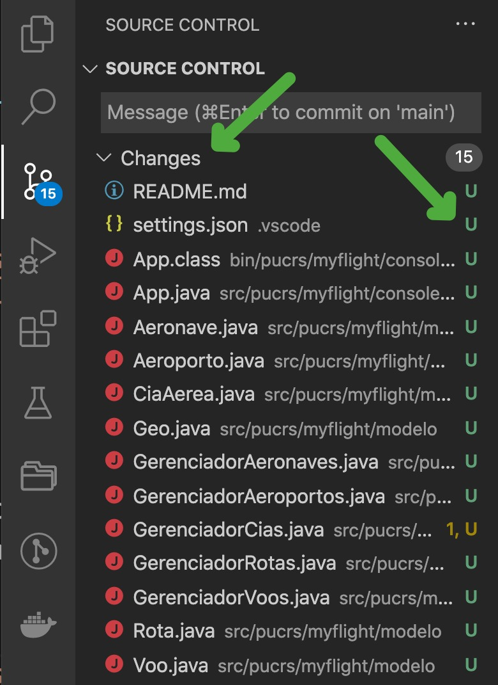
-
Agora devemos vincular todos os arquivos ao Git. Essa operação é chamada de staging (git add). Podemos adicionar arquivos individuais utilizando o icone (+) ou toda a lista usando a mesma opção na aba Changes: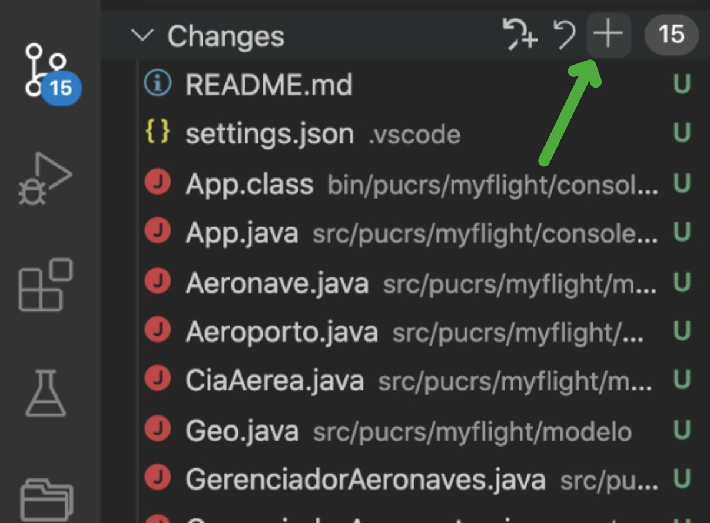
- Neste momento, os arquivos (agora na aba Staged e anotados com A (Added)) estão vinculados ao controle de versão.
3 Realizando alterações (commit)
-
Para registrar alterações no código do projeto (git commit), na aba Source Control preencha a mensagem de commit que ficará registrada no repositório. A mensagem deve ser curta, mas comentar sobre as alterações feitas. Como esse é o primeiro commit, deixamos “MyFlight - comit inicial”. Finalmente clique no botão Commit:
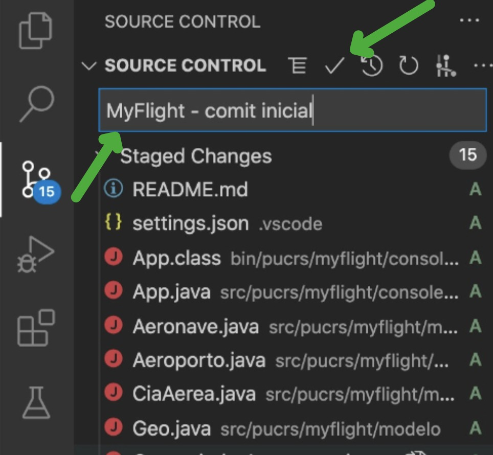
- Repita o processo localmente, para registrar todas as alterações desejadas.
4 Criando um repositório
-
Crie um repositório, por exemplo, no GitHub (https://github.com/) ou BitBucket (http://bitbucket.com). Neste passo a passo vamos utilizar o GitHub (assumindo que você já se registrou):
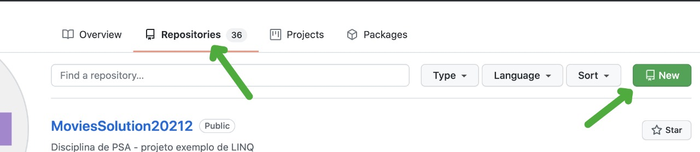
-
Informe os dados do repositório. Deixe privado se não quiser que outras pessoas possam acessá-lo. É muito importante colocar uma boa descrição do projeto e adicionar uma página de README e um arquivo .gitigore em todos seus projetos (estes dois últimos não cobertos nesse passoa a passo):
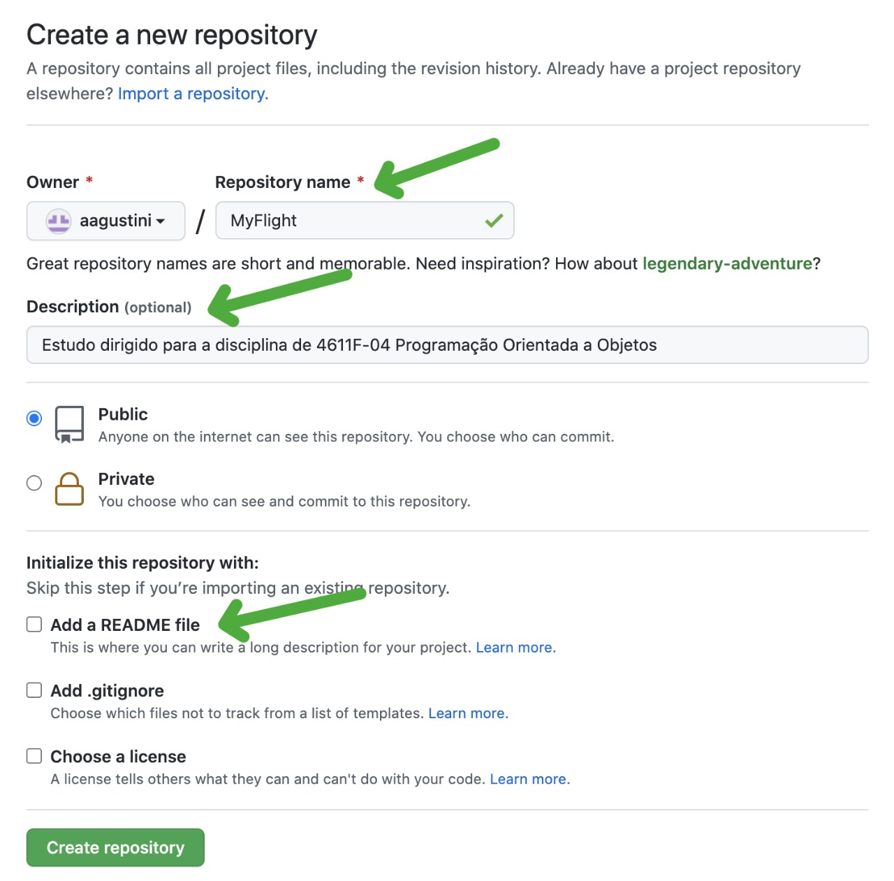
- Caso você esteja trabalhando em sua máquina pessoal é possível configurar/autorizar o VSCode para fazer a criação do repositório no momento que realziar o primeiro envio enviar as alterações para o GitHub.
-
Note que ao fazer a criação do repositíorio o GitHub já fornece uma receita de bolo de como fazer o acesso ao repositório. Copie o link relativo ao endereço de remote do repositório criado:
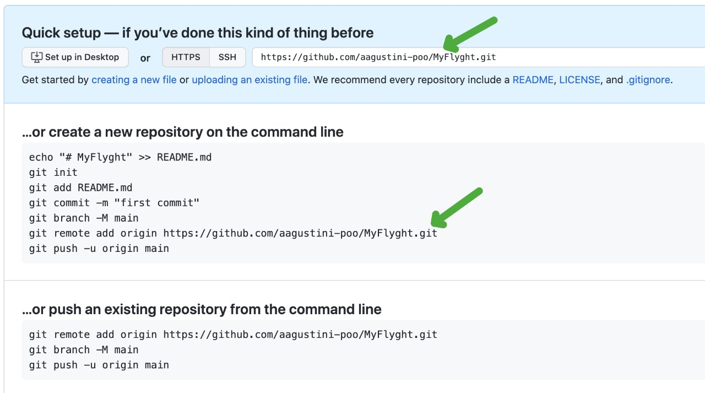
5 Enviando alterações locais para o repositório remoto (push)
-
Para enviar as alterações ao repositório remoto, é preciso primeiro configurá-lo.
Inicialmente vamos vincular nosso projeto ao repositório, acesse a opção Define remote e digite a URL do repositório do GitHub, tecle Enter e em seguida digite o nome no remoto origin:
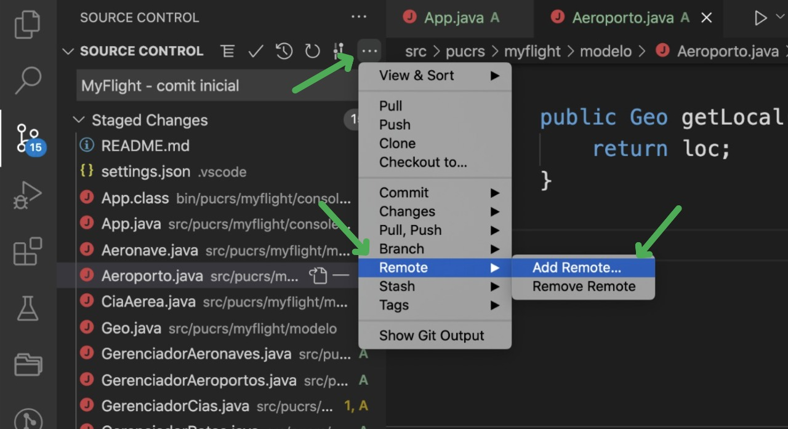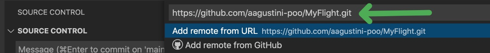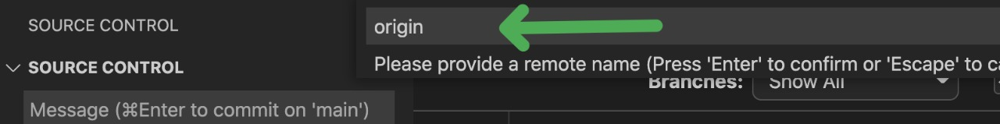
-
A seguir envie Push as alterações para o repositório compartilhado: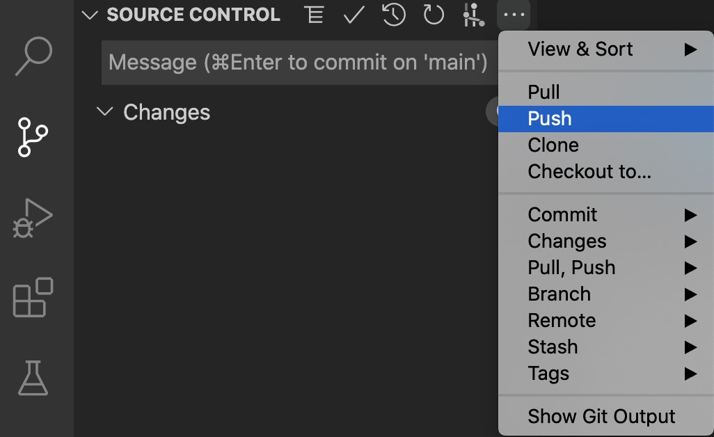
- Podes verificar no GitHub que o projeto foi publicado.
6 Gerenciando alterações feitas por outros (pull)
-
Um passo intermediário antes de continuar. Acrescente ao diretíorio raiz da sua aplicação um arquivo de nome .gitignore. Neste arquivo podemos listar um conjunto de regras de arquivos que não queremos manter no nosso repositório (por exemplo, a regra *.class informa ao
Git que estes arquivos nao devem ser mantidos no repositório. Sugestão - use o site gitignore.io (http://gitignore.io/) para gerar o conteúdo do seu arquivo: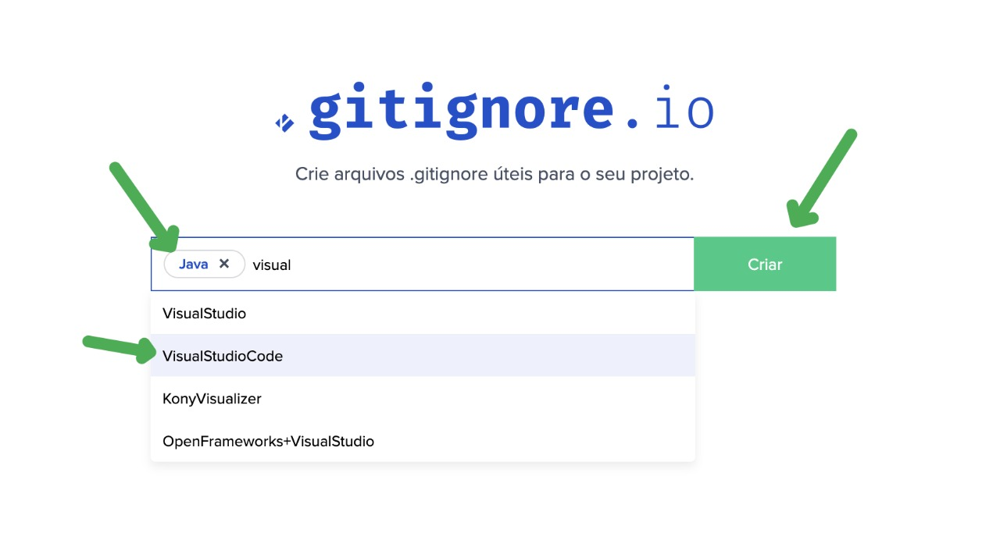 -
Voltando ao pull, primeiro acrescente os métodos adicionar e buscarPorCodigo na classe GerenciadorCias: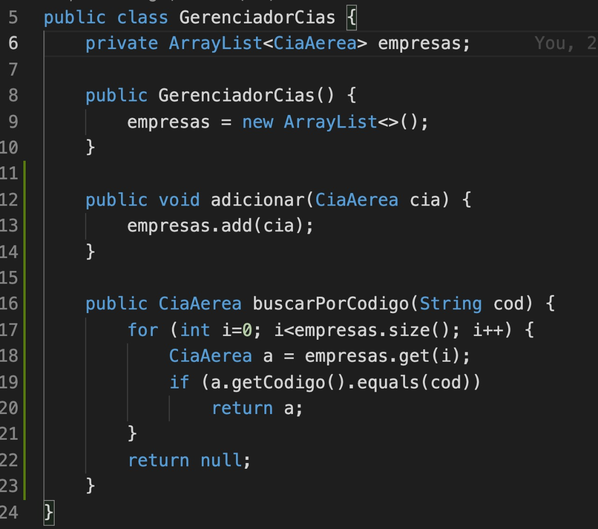
- Faça commit da forma mostrada anteriormente, digitando a mensagem de commit desejada (note que será necessário, antes, adicionar o arquivo .gitignore ao sistema de controle de versões, além do arquivo modificado GerenciadorCias.java), seguida de um push para atualizar também o projeto no GitHub.
-
Agora vamos simular que outra pessoa fez uma alteração no mesmo código. Para tanto, abra a página do seu repositório no GitHub, navegue pela estrutura de diretórios e selecione o arquivo GerenciadorCias.java, a seguir clique no ícone de edição:
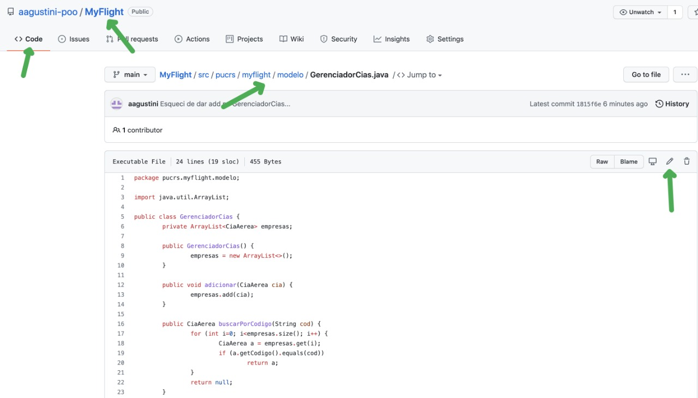
-
Troque o código do método pesquisarPorCodigo pelo seguinte, que usa o comando for..each. A seguir, pressione o botão Commit: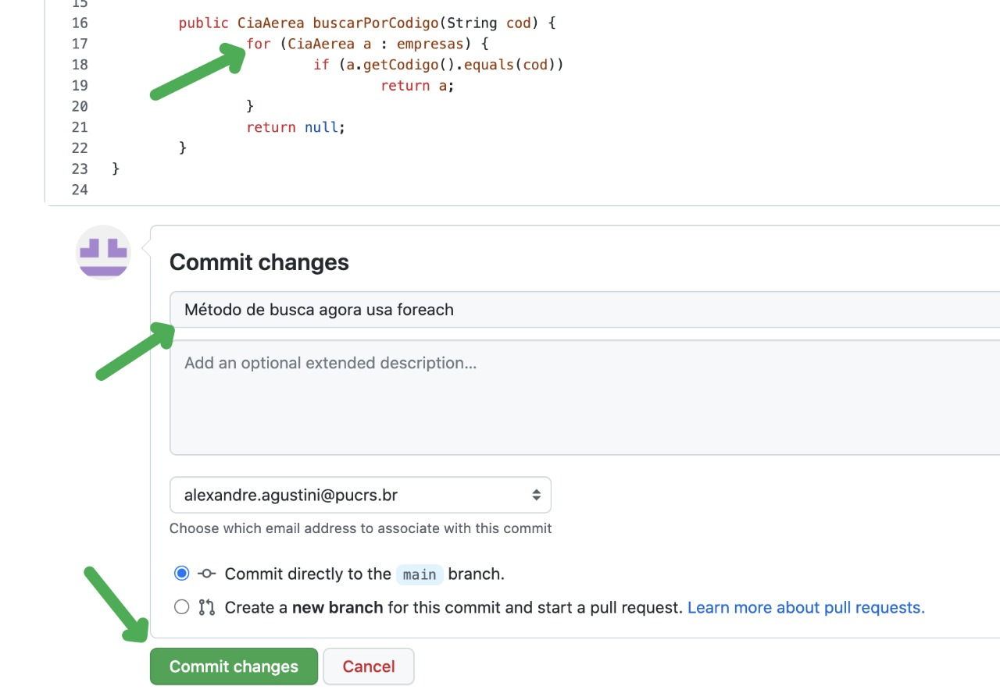
-
De volta no VSCode... em seguida o editor irá perceber que a versão local não é aquela do remoto e irá sugerir que seja realizado um pull (veja que o GitGraph também indica esssa situação).
Selecione a opção pull para atualizar sincronizar as versões (abra o arquivo GerenciadorCias.java e note que o mesmo foi atualizado):
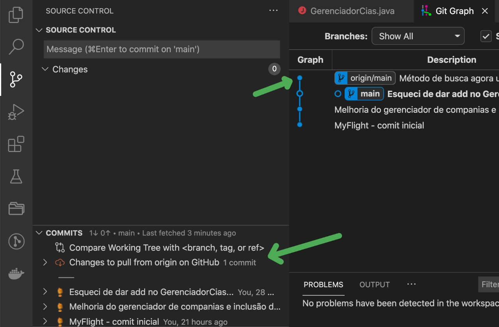
7 Resolvendo conflitos
-
Ao realizar a operação de pull, pode haver conflitos, ou seja, alterações que foram feitas por ambos no mesmo trecho de código. Nesse caso, o Git não saberá como resolver e exigirá uma intervenção do usuário. Para entender isso, edite novamente o arquivo GerenciadorCias.java no GitHub (siga os passos anteriores), e altere da seguinte forma, desfazendo a modificação anterior e fazendo novamente Commit: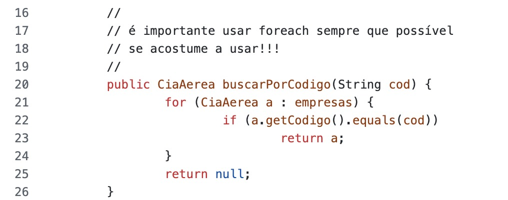
-
Agora, no VSCode, altere o código de forma um pouco diferente e tente fazer commit+push. Por exemplo, documente o código do método buscarPorCodigo da seguinte forma (JavaDoc):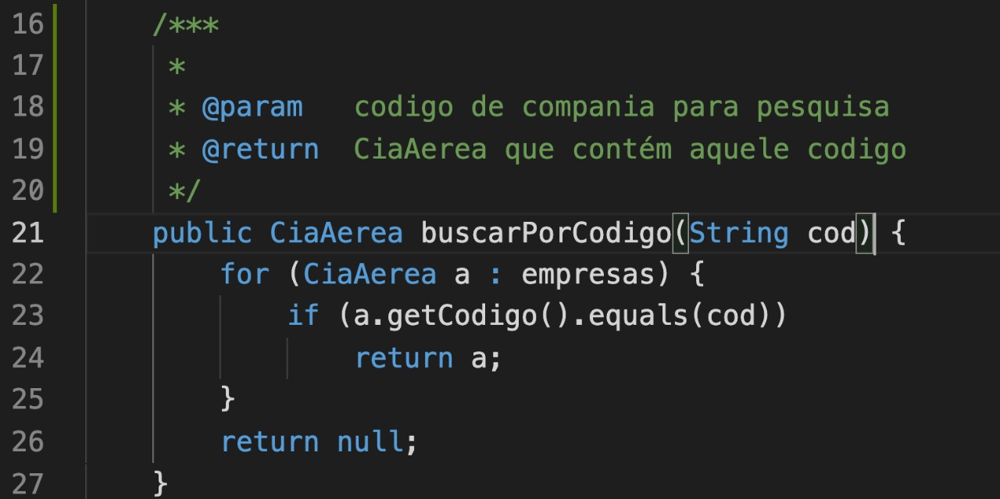
-
Observe que o push é rejeitado, uma vez que o mesmo trecho foi editado em dois locais diferentes. Para resolver, clique no botão Merge: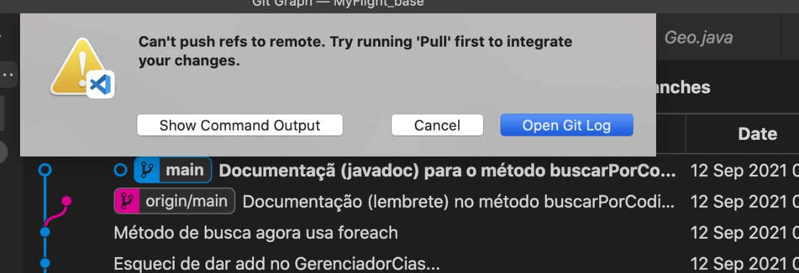
-
Feche a janela e siga a orientação de realizar um pull antes de realizar o push. A seguinte janela é apresentada. Nela, você pode escolher editar o arquivo onde houve conflito, decidindo oque deve ser mantido ou não. Note que o VSCode já sugere uma mensagem de commit, para após realizares as alterações.
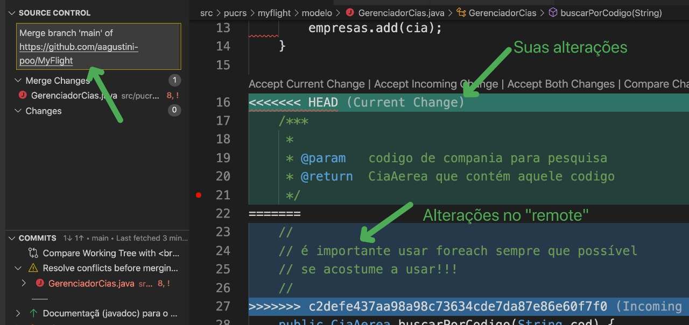
- Após resolver o(s) conflito(s), será necessário fazer um novo commit seguido de um push.